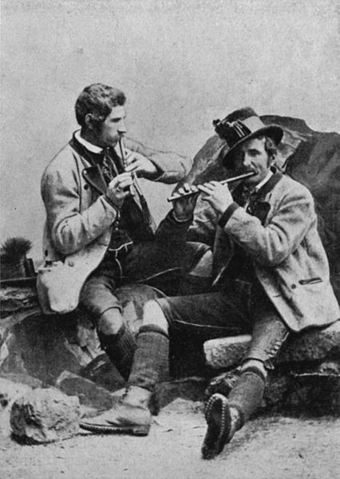

Os irmãos Steinegger, flautistas tradicionais de Grundlsee, Styria, 1880.
A música tradicional (também chamada de música folclórica/folk) é o conjunto de canções
tradicionais de um
povo. Tratam de quase todos os tipos de atividades humanas e muitas destas canções expressam crenças religiosas
ou políticas de um povo ou descrevem sua história. As canções tradicionais lendárias são geralmente de origem
remota e têm caráter poético. São exemplos disso as baladas inglesas da Idade Média e do Renascimento e os
spirituals dos afro-americanos. Fruto de transmissão oral, a música tradicional sofre evolução e é permeável aos
contatos e influências culturais do exterior.
O termo música tradicional/folclórica tem origem no século XIX, mas muitas vezes é aplicado a música que é mais
antiga do que isso. Alguns tipos de música tradicional também são chamados de música do mundo. A música
tradicional tem sido definida de várias maneiras: como música transmitida oralmente, música com compositores
desconhecidos, ou música realizada por costume durante um longo período de tempo. Foi contrastada com estilos
comerciais e clássicos.
A música tradicional é a música que representa uma comunidade e pode ser cantada ou tocada por pessoas que podem
ou não ser músicos treinados, usando os instrumentos disponíveis para eles. À medida que os tempos mudaram, a
música progrediu para refletir os tempos. Muitas das antigas canções de trabalho e de protesto ainda são
cantadas hoje, embora com novos versículos que foram adicionados para refletir o contexto em que as músicas
foram ressuscitadas.
Características
Do ponto de vista histórico, a música tradicional tem as seguintes características:
Foi transmitida através de uma tradição oral. Antes do século 20, os trabalhadores agrícolas e os
trabalhadores das fábricas eram geralmente analfabetos. Eles adquiriram músicas memorizando-as;
A música era muitas vezes relacionada à cultura nacional. Era culturalmente privada; De uma determinada
região ou cultura. No contexto de um grupo imigrante, a música folclórica adquire uma dimensão extra para a
coesão social. É particularmente notável nas sociedades de imigrantes, onde os australianos gregos, os
americanos da Somália, os canadenses Punjabi e outros se esforçam para enfatizar suas diferenças em relação
a cultura dominante no local. Eles aprendem músicas e danças que se originam nos países dos quais seus avós
vieram;
Eles comemoram eventos históricos e pessoais. Em certos dias do ano, como a Páscoa, o Dia de Maio e o Natal,
canções específicas celebram o ciclo anual. Casamentos, aniversários e funerais também podem ser celebrados
com músicas, danças e costumes especiais. Festivais religiosos muitas vezes têm um componente de música
folclórica. A música de coral nestes eventos traz crianças e cantores não profissionais para participar de
uma arena pública, dando uma ligação emocional que não está relacionada com as qualidades estéticas da
música;
As músicas foram realizadas, por costume, durante um longo período de tempo, geralmente várias gerações.
Como efeito colateral, as seguintes características são por vezes presentes:
Não há direitos autorais sobre as músicas. Centenas de canções folclóricas do século XIX possuem autores,
mas continuaram na tradição oral até o ponto em que são consideradas tradicionais para fins de publicação
musical. Isso se tornou bem menos frequente desde a década de 1940. Hoje, quase todas as músicas folk
gravadas são creditadas a um arranjador;
Fusão de culturas: pelo fato de as culturas interagirem e mudarem ao longo do tempo, as músicas tradicionais
que evoluem ao longo do tempo podem incorporar e refletir influências de culturas diferentes. Os fatores
relevantes podem incluir instrumentação, afinação, vocais, phrasing, temáticas e até mesmo métodos de
produção.
Composição
Na música folclórica, um som é uma peça instrumental curta, uma melodia, muitas vezes com seções
repetitivas, e geralmente tocadas várias vezes. Uma coleção de sons com semelhanças estruturais é conhecida
como uma "melodia-de-família". O livro "America's Musical Landscape" diz que "a forma mais comum para
músicas tradicionais é a AABB, também conhecida como forma binária".